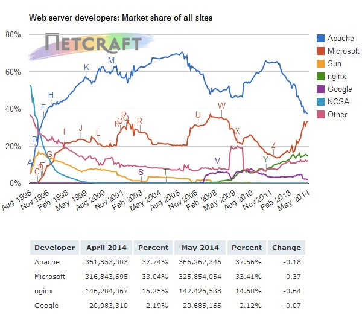
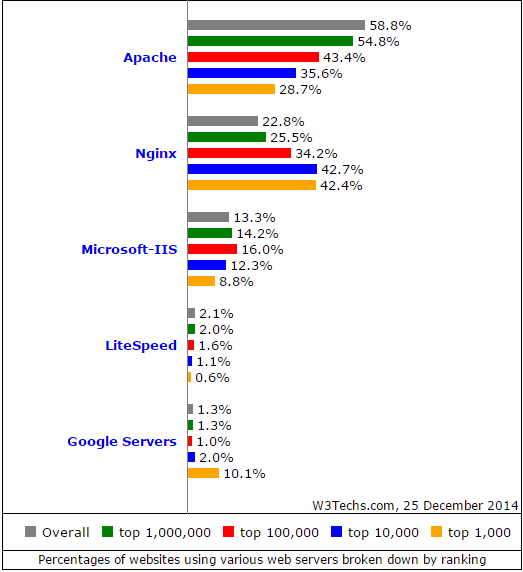
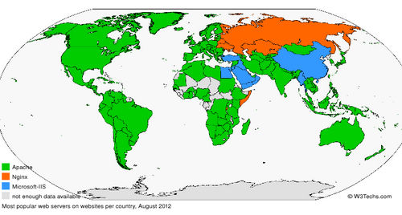

Efigines-(Efficient Engine Server)是一个高性能、高效率的HTTP和反向代理服务器，它基于Nginx(“engine x”)(由 Igor Sysoev 为俄罗斯访问量第二的 Rambler.ru 站点开发的，第一个公开版本0.1.0发布于2004年10月4日。其将源代码以类BSD许可证的形式发布，因它的稳定性、丰富的功能集、示例配置文件和低系统资源的消耗而闻名)开发的，我做它的主要目的是深入理解服务器机制、网络服务、学习高效服务器。之所以选择Nginx是因为它的高性能、高并发、高稳定性和小巧性，短短10W行左右的代码便可达到几十万的并发，它聚焦于高性能，高并发和低内存消耗问题。并且具有多种web服务器功能特性：负载均衡，缓存，访问控制，带宽控制，以及高效整合各种应用的能力，这些特性使nginx很适合于现代网站架构。目前，nginx已经是互联网上第二流行的开源web服务器软件
Nginx近几年的发展：

各服务器所占市场份额：

各服务器使用量在全球的分布：

高并发高性能服务器的需要：随着永久在线的个人电脑，移动终端以及平板电脑的增多，互联网在快速变化，经济系统也完全数字有线化。提供实时可用信息和娱乐的在线服务变得更加复杂精巧。在线业务的安全需求也急剧变化。网站比从前更加复杂，需要在工程上做的更具有健壮性和可伸缩性。 并发总是网站架构最大的挑战之一。由于web服务的兴起，并发的数量级在不断增长。热门网站为几十万甚至几百万的同时在线用户提供服务并不寻常。十年前，并发的主要原因是由于客户端接入速度慢–用户使用ADSL或者拨号商务。现在，并发是由移动终端和新应用架构所带来，这些应用通常基于持久连接来为客户端提供新闻，微博，通知等服务。另一个重要的因素就是现代浏览器行为变了，他们浏览网站的时候会同时打开4到6个连接来加快页面加载速度。 举例说明一下慢客户端的问题，假设一个Apache网站产生小于100KB的响应–包含文本或图片的网页。生成这个页面可能需要1秒钟，但是如果网速只有80kbps（10KB/s），需要花10秒才能把这个页面发送到客户端。基本上，web服务器相对快速的推送100KB数据，然后需要等待10秒发送数据之后才能关闭连接。那么现在如果有1000个同时连接的客户端请求相同的页面，那么如果为每个客户端分配1MB内存，就需要1000MB内存来为这1000个客户端提供这个页面。实际上，一个典型的基于Apache的web服务器通常为每个连接分配1MB内存，而移动通信的有效速度也通常是几十kbps。虽然借助于增加操作系统内核socket缓冲区大小，可以优化发送数据给慢客户端的场景，但是这并不是一个常规的解决方案，并且会带来无法预料的副作用。 Nginx很适合做这些工作。他提供了必要的关键功能用于方便将下列功能从应用层剥离到更高效的边缘web服务器层：并发、长连接处理、SSL，静态内容、压缩和缓存、连接和请求限速，以及HTTP媒体流等。Nginx同时也允许直接整合memcached、Redis或者其他的NoSQL解决方案，增强为处理大规模并发用户的性能。 同时也是我要学习开发Efignes一个原因。 路漫漫其修远兮，路还长，慢慢学习慢慢做吧！